Deploy da Aplicação
Até agora você desenvolveu as suas aplicações e testou o servidor localmente. Neste handout vamos aprender como publicar a nossa aplicação para que qualquer pessoa com acesso à internet possa acessá-la. Existem diversas opções de hospedagem disponíveis. Alguns exemplos são a Amazon AWS, DigitalOcean, PythonAnywhere, Linode, Heroku ...
Crie uma conta
Vamos utilizar o serviço Render que oferece a opção gratuita para testarmos o seu serviço.
{kind=link}
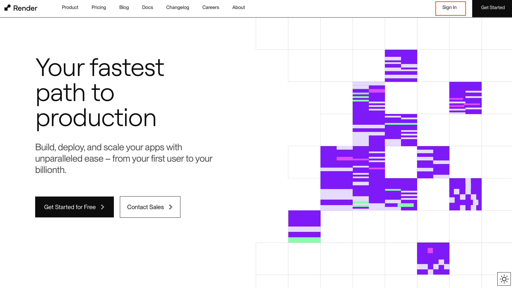
Crie a conta utilizando a conta do Github.
{kind=link}
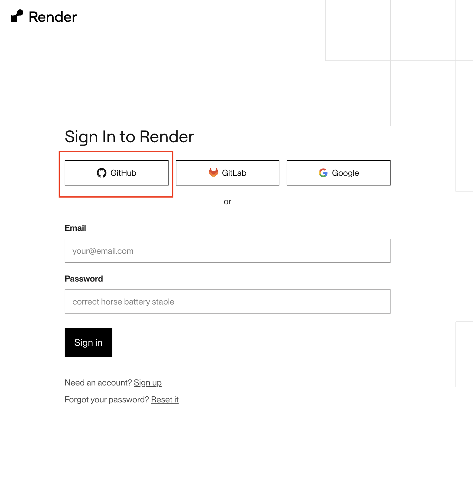
Importante
Não adicione/cadastre nenhum informação de pagamento.
Projeto Exemplo
Para este handout, vamos utilizar um projeto exemplo que está disponível no repositório: https://github.com/BarbaraTieko/tecweb-projeto-exemplo.git
Acesse o link do repositório e faça um fork do projeto.
{kind=link}
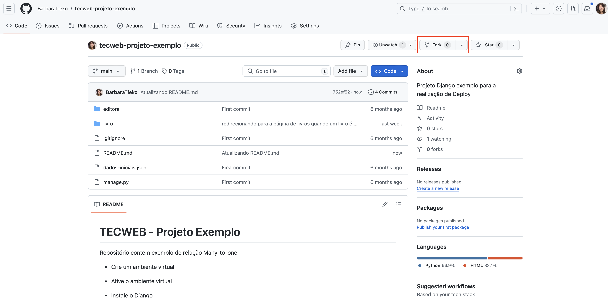
Ao realizar o fork, você terá uma cópia do projeto em seu repositório. Desta forma, você poderá realizar as alterações que desejar sem alterar o projeto original.
{kind=link}
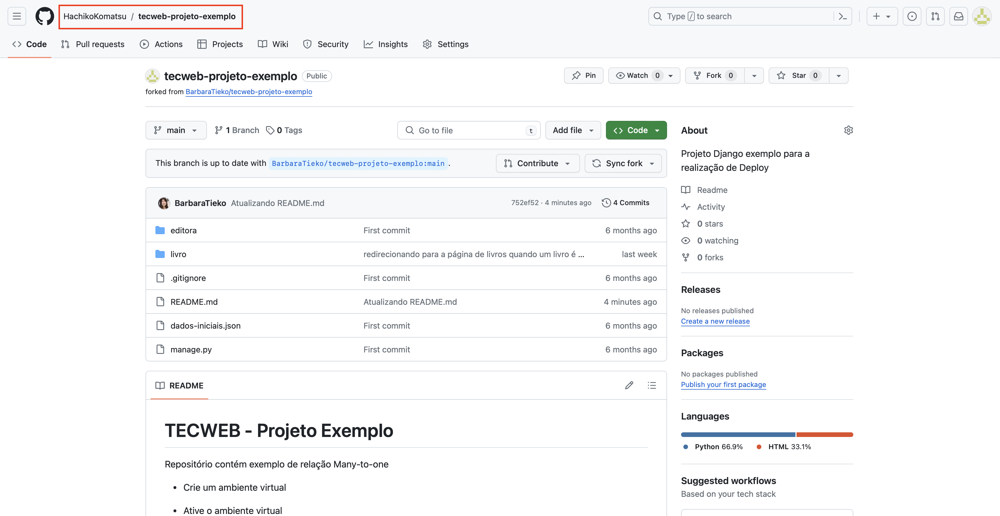
Clone o repositório que acabou de criar com o fork.
Criando PostgreSQL no Render
Atualmente estamos testando a aplicação localmente em nosso computador.
{kind=link}
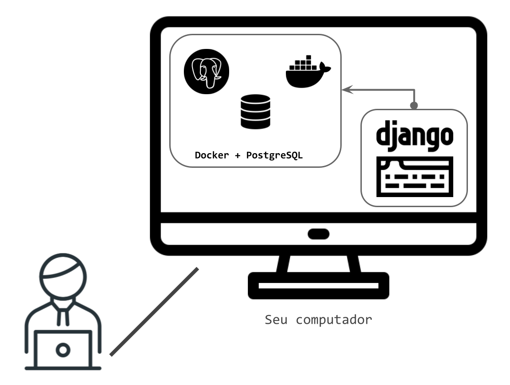
Para que a aplicação fique disponível para qualquer pessoa com acesso à internet, precisamos deixar nossa aplicação rodando 24 horas por dia. O nosso computador não é a melhor opção para isso. Para isso, vamos pegar emprestado um computador de uma empresa que oferece esse serviço. Neste handout vamos utilizar o Render que oferece uma opção gratuita para testarmos o seu serviço.
O primeiro passo é criar um banco de dados PostgreSQL utilizando o Render.
{kind=link}
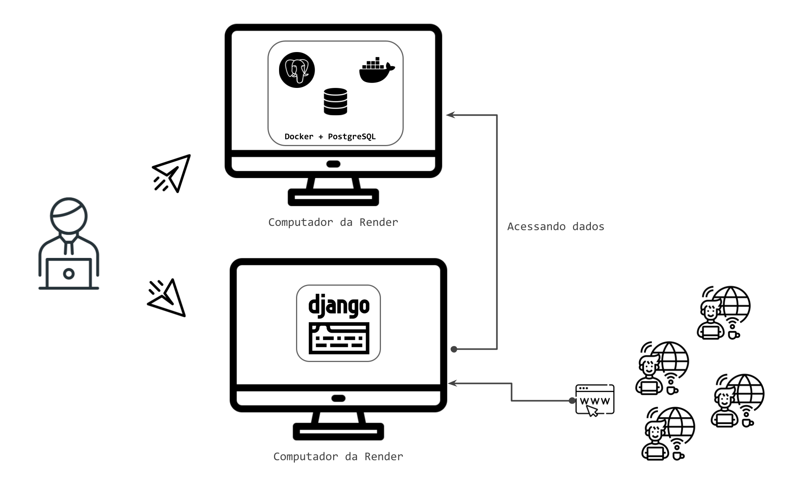
Visite o site https://render.com/ e preenche o campo name com um nome para o banco de dados. Os outros campos são opcionais.
{kind=link}
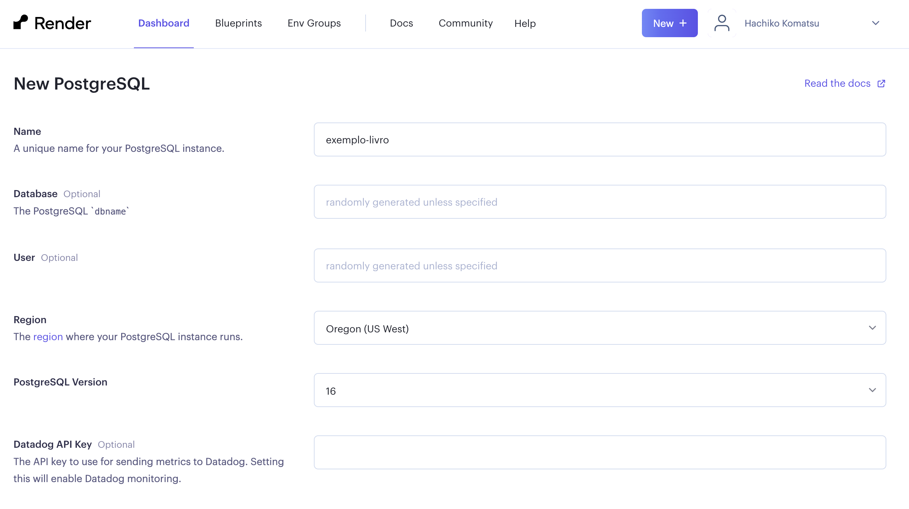
Escolha a opção gratuita. Não é necessário adicionar nenhuma informação de pagamento.
Em seguida, clique em Create Database.
{kind=link}
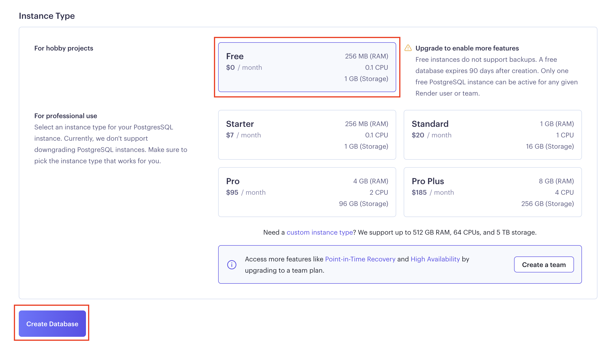
Será necessário esperar um pouco até que o banco de dados seja criado.
{kind=link}
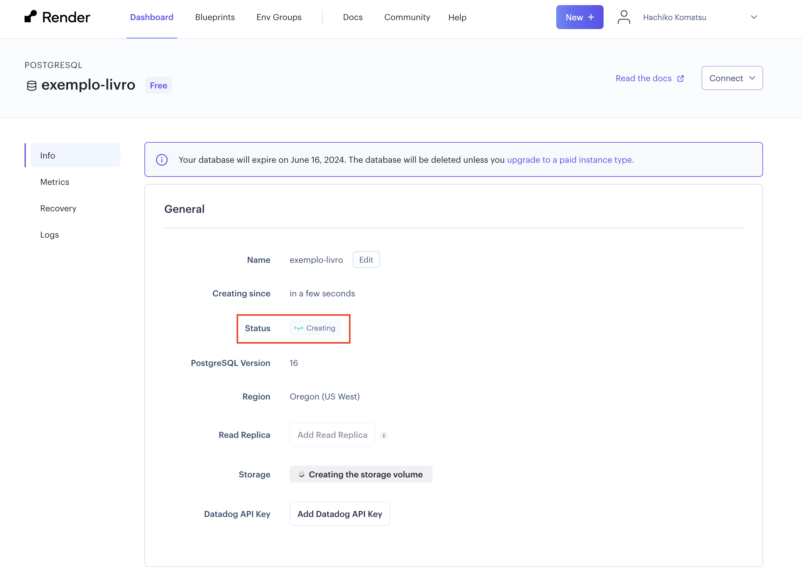
Quando o status estiver como Available, desça a página e procure a área chamada Connections. Dentro dessa área, procure o campo External Database URL, essa informação será utilizada para conectar o banco de dados com a aplicação.
Clique no botão Copy e guarde essa informação, pois vamos precisar dela mais tarde.
{kind=link}
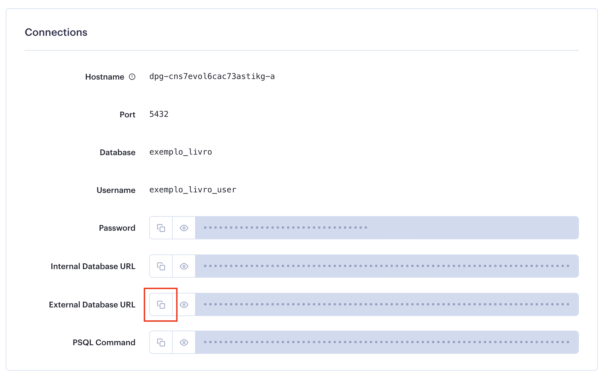
Conectando a aplicação com o banco de dados PostgreSQL
- Abra o projeto exemplo.
- Crie um ambiente virtual para este projeto e ative-o.
-
No projeto há um arquivo chamado
requirements.txtque contém todas as dependências necessárias para rodar o projeto. Vamos instalar todas as dependências com o comando:Problema
Caso o comando acima não funcione, tente instalar as dependências a seguir:
Projeto 1B
Para o projeto 1B não será necessário seguir esta etapa, pois o seu projeto ainda não possui um arquivo
requirements.txt.Basta continuar com as próximas etapas.
-
Para conectarmos a aplicação com o banco de dados PostgreSQL que acabamos de criar, vamos utilizar a biblioteca
dj-database-url. Essa biblioteca é responsável por fazer a conexão entre a aplicação e o banco de dados. Para instalar essa biblioteca, execute o comando:Sempre que você adiciona (ou remove) uma dependência é necessário atualizar o
requirements.txt:Veja que o arquivo
requirements.txtfoi atualizado com a nova dependência. -
Adicione o
importno começo do arquivosettings.py(Pode ser logo após o códigofrom pathlib import Path):
- ainda no arquivo
settings.py, procure pelo dicionárioDATABASESe substitua pelo código abaixo:
DATABASES = {
'default': dj_database_url.config(
default='',
conn_max_age=600,
ssl_require=not DEBUG
)
}
No campo default adicione a informação aquela informação que havíamos copiado anteriormente. (O campo External DATABASE URL)
Mais configurações do projeto
Até o momento, nós utilizamos o python manage.py runserver para executar o nosso servidor localmente. Esse comando é apropriado apenas para testes no ambiente de desenvolvimento. Ele não é otimizado para uma aplicação real. Para isso precisamos de um servidor de Web Server Gateway Interface (WSGI), que basicamente é um intermediário entre as requisições que chegam no servidor e o código Python. No nosso projeto nós utilizaremos o Gunicorn (Green Unicorn). Você pode instalá-lo com (importante: lembre-se de ativar o ambiente virtual):
pip install gunicorn
Será necessário atualizar o requirements.txt:
O arquivo wsgi.py
O comando acima executou o Gunicorn com o arquivo de configuração wsgi.py que existe no projeto. Normalmente não é necessário alterar esse arquivo, então não vamos entrar em detalhes. O que você precisa saber é que todo projeto Django possui um arquivo wsgi.py dentro da pasta do projeto.
Outras modificações nas configurações
Aproveite que está com o settings.py aberto e modifique o valor da constante DEBUG para False. Além disso, procure pela lista ALLOWED_HOSTS, ela deve ser uma lista vazia, ou seja, ALLOWED_HOSTS = [] altere para:
Configurando os arquivos estáticos
Praticamente toda aplicação web possui arquivos estáticos. Desde o primeiro servidor que implementamos foi necessário que o servidor fosse capaz de responder com o conteúdo desses arquivos. Entretanto, passar pela camada do Python para devolver um arquivo estático não é uma boa estratégia para uma aplicação no mundo real. Arquivos estáticos podem ser servidos de maneira muito mais eficiente. Por esse motivo, o Django serve arquivos estáticos apenas em ambientes de teste/desenvolvimento, mas não em produção.
Para que a nossa aplicação funcione com todos os arquivos estáticos será necessário adicionarmos mais algumas dependências e alterarmos algumas configurações. Comece instalando o WhiteNoise:
pip install whitenoise
O WhiteNoise é responsável por servir arquivos estáticos no Django de forma eficiente. Ele precisa ser adicionado às configurações do Django. Abra o arquivo settings.py e procure pela lista chamada MIDDLEWARE e adicione o seguinte conteúdo logo depois de 'django.middleware.security.SecurityMiddleware',:
'whitenoise.middleware.WhiteNoiseMiddleware',
Nesse mesmo arquivo, procure por STATIC_URL = '/static/' e adicione a seguinte linha logo em seguida:
STATIC_ROOT = BASE_DIR / 'staticfiles'
A primeira modificação faz com que o WhiteNoise seja utilizado pelo Django. A constante STATIC_ROOT define onde o Django deve colocar os arquivos estáticos que serão servidos em produção (por isso você não precisou dele até agora).
Como instalamos o whitenoise precisamos atualizar o requirements.txt. Desta forma, rode o comando abaixo novamente.
pip freeze > requirements.txt
O arquivo requirements.txt deve se parecer com o exemplo abaixo:
{kind=link}
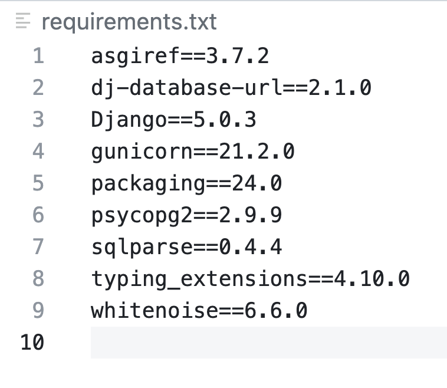
Caso o arquivo requirements.txt possua muitas dependências, talvez você tenha se esquecido de utilizar o ambiente virtual. Neste caso, ative o ambiente virtual e rode o comando pip freeze > requirements.txt novamente.
Se o arquivo possuir muitas dependências desnecessárias o deploy vai falhar.
Faça commit e um push
Faça o commit das mudanças do seu projeto e faça um push para o seu repositório no Github.
Enviando o projeto para o Render
-
Acesse a página do Render e clique em
New +e em seguidaWeb Service. -
Escolha a opção de fazer o deploy a partir de um repositório do Github.
-
Procure o repositório que você fez o fork do projeto e clique em
Connect. -
Procure a opção
Start Commande troque o comando existente pelo seguinte comando:Veja o que cada comando faz:
python manage.py migrate- Executa as migrações do banco de dados.python manage.py collectstatic- Coleta todos os arquivos estáticos e os coloca na pastastaticfiles.gunicorn editora.wsgi:application- Inicia o servidor com Gunicorn. Quando rodamos o comandopython manage.py runservero Django já inicia um servidor, mas para produção é necessário utilizar o Gunicorn.
Importante
Ao tentar realizar este handout com o seu Projeto 1B, você deve alterar o comando
gunicorn editora.wsgi:applicationparagunicorn getit.wsgi:application.Caso queira que alguns escritores sejam criados automaticamente, adicione o comando
python manage.py loaddata dados-iniciais.json. Este comando irá carregar os dados do arquivodados-iniciais.jsonpara o banco de dados. -
Selecione a opção gratuita e clique em
Create Web Service. -
O Render vai iniciar o processo de deploy. Aguarde até que o deploy seja finalizado. É possível acompanhar o processo do deploy no terminal do Render.
-
Caso o deploy tenha sido realizado com sucesso, você verá a seguinte mensagem:
É possível acessar a aplicação clicando no link que aparece no topo da página.
{kind=link}
{kind=link}
{kind=link}
{kind=link}
{kind=link}
{kind=link}
{kind=link}
{kind=link}
Passo final
Após realizar a etapa acima com sucesso, realize as últimas configurações.
Vá no arquivo settings.py e atualize a variável ALLOWED_HOSTS (A configuração da variável ALLOWED_HOSTS serve para evitar alguns ataques):
ALLOWED_HOSTS não deve utilizar o https://
Substitua tecweb-projeto-exemplo.onrender.com pelo link da sua aplicação gerado pelo Render.
Faça um novo commit e realize um push para o seu repositório no Github.
Sempre que você realizar um commit na branch principal, o Render fará um novo deploy.
{kind=link}
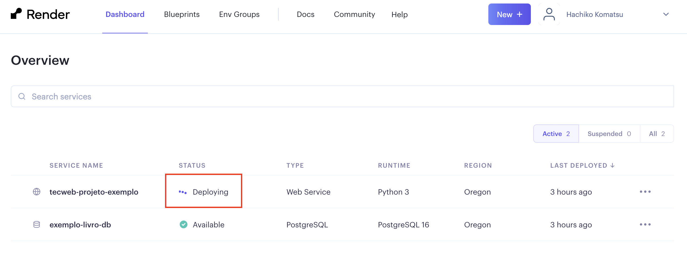
{kind=link}
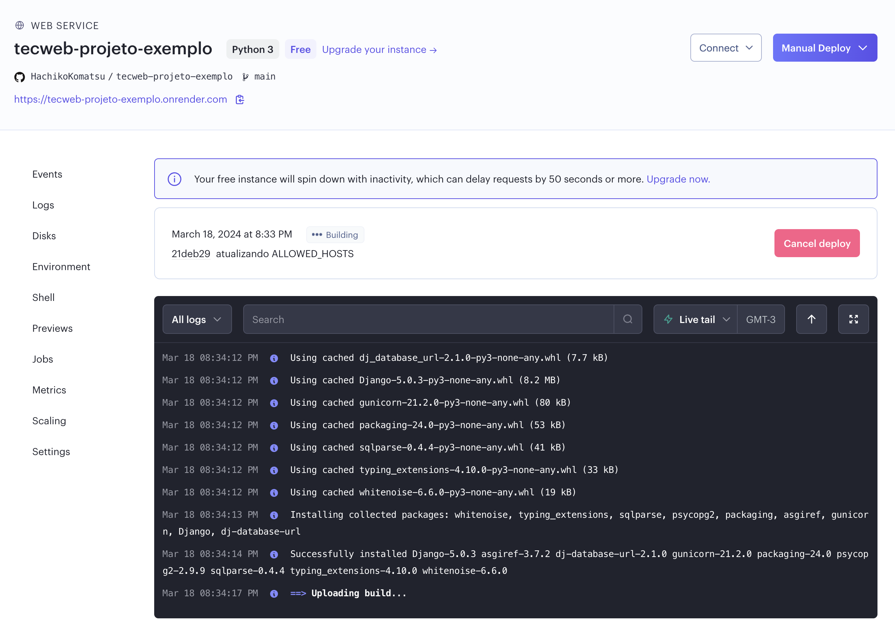
Rodando o projeto localmente
Agora que o nosso projeto está rodando no Render, não podemos fazer um commit de uma implementação não finalizada. Desta forma, sempre que precisar implementar uma nova funcionalidade, crie uma nova branch e faça um merge com a branch principal somente quando a funcionalidade estiver funcionando e finalizada.
Para implementar novas funcionalidades, será necessário rodar o projeto localmente novamente.
Para rodar o projeto localmente, mude a variável Debug presente no arquivo settings.py para True.
Além disso, mude as configurações do banco de dados para uma das configurações abaixo:
Configuração para utilizar SQlite3:
DATABASES = {
'default': {
'ENGINE': 'django.db.backends.sqlite3',
'NAME': BASE_DIR / 'db.sqlite3',
}
}
Configuração para utilizar PostgreSQL:
DATABASES = {
'default': {
'ENGINE': 'django.db.backends.postgresql_psycopg2',
'NAME': 'getit',
'USER': 'getituser',
'PASSWORD': 'getitsenha',
'HOST': 'localhost',
'PORT': '5432',
}
}
Config do banco de dados
Caso rode o projeto localmente e mantenha a configuração do banco de dados abaixo, você estará alterando o banco de dados que está no Render.com.
DATABASES = {
'default': dj_database_url.config(
default='',
conn_max_age=600,
ssl_require=not DEBUG
)
}
Qualquer teste que for feito localmente estará alterando o banco de dados que está no render.com
Fazendo o deploy do Projeto 1B
Agora que você finalizou o deploy do projeto exemplo, faça o deploy do Projeto 1B.
Como o serviço do Render é gratuito, talvez tenha que excluir as instâncias do banco de dados e do projeto da editora de livros que acabou de criar para que possa criar novas instâncias para o Projeto 1B.
Ao realizar o deploy do seu projeto 1B, adicione o link para acessar a aplicação no README.md do seu repositório.
Referências
- Deploying to Heroku Server | Django (3.0) Crash Course Tutorials (pt 23): https://www.youtube.com/watch?v=kBwhtEIXGII
- Deploy a Django App to Heroku: https://www.youtube.com/watch?v=GMbVzl_aLxM
- Heroku Postgres - connecting with Django: https://devcenter.heroku.com/articles/heroku-postgresql#connecting-with-django
- Heroku - Django migrations: https://help.heroku.com/GDQ74SU2/django-migrations
- Heroku - Working with Django: https://devcenter.heroku.com/categories/working-with-django
- Deploy a Django web app to a Render live server with PostgreSQL - https://youtu.be/AgTr5mw4zdI?si=DNWuSTXZEu92XHZR
- Deploy Django com PostgreSQL - utilizando Free Trial Render https://youtu.be/hJuQb5L1Eq0